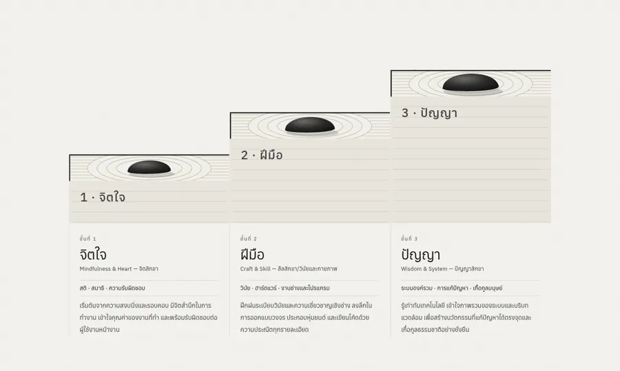
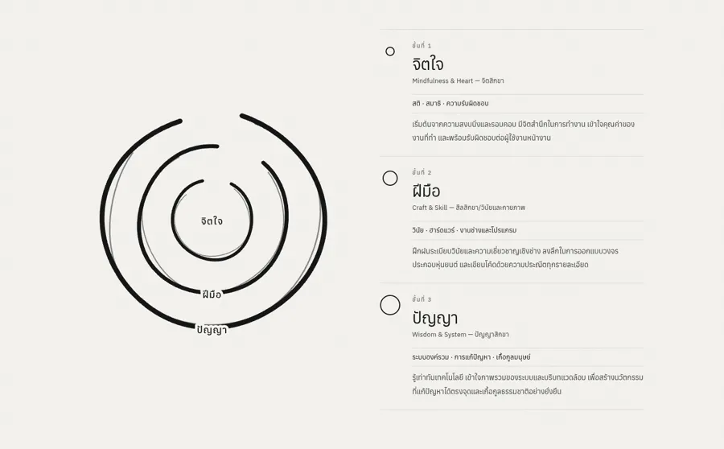
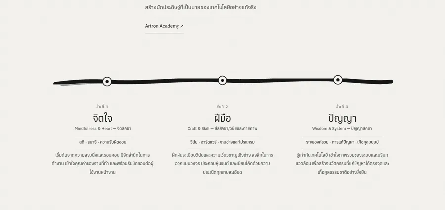

หน้าแรก · ส่วน ARTRON ACADEMY · 3 แบบให้เลือก
เริ่มต้นจากพัฒนาคน
จากจิตใจ สู่ฝีมือ สู่ปัญญา
ทั้ง 3 แบบต่อยอดจากหน้าแรก v4 ใช้ข้อความชุดใหม่เหมือนกันทุกคำ และคงฉากเปิดเซนไว้เหมือนเดิม สิ่งที่ต่างกันคือภาพในส่วน Academy กับตำแหน่งของส่วนนี้ในหน้า

แบบ A
บันได 3 ขั้น
ลานทรายคราดยกระดับเป็น 3 ขั้นจากซ้ายไปขวา มีหินวางอยู่บนแต่ละขั้น และขั้นจะค่อย ๆ ปรากฏทีละขั้นตามการเลื่อนจอ ส่วน Academy อยู่ต่อจาก "เทคโนโลยี ที่คิดอย่างมีศิลปะ" ก่อนส่วนเลือกอุตสาหกรรม
เปิดแบบ A →
แบบ B
วงเซน 3 วง
วงเอนโซพู่กัน 3 วงซ้อนกัน วงในคือจิตใจ วงกลางคือฝีมือ วงนอกคือปัญญา แต่ละวงจะค่อย ๆ ถูกวาดขึ้นตามการเลื่อนจอ ตำแหน่งในหน้าเหมือนแบบ A
เปิดแบบ B →
แบบ C
เส้นพู่กัน
เส้นหมึกพู่กันเส้นเดียวลากผ่าน 3 จุด บนมือถือจะเป็นเส้นแนวตั้ง ส่วน Academy ย้ายขึ้นไปอยู่ต่อจากฉากเปิดทันที เพื่อเล่าเรื่อง "คนมาก่อนเทคโนโลยี" แล้วตามด้วย "เทคโนโลยี ที่คิดอย่างมีศิลปะ"
เปิดแบบ C →- ใช้ข้อความชุดใหม่ทั้งหมด ตั้งแต่ H1 "สร้างเทคโนโลยีที่เติบโตไปพร้อมกับมนุษย์" ไปจนถึงท้ายหน้า
- เลขหัวข้อเรียงต่อกันไม่ซ้ำ (A และ B ไปจบที่ 09 ส่วน C ไปจบที่ 10)
- หัวข้อ 'ความไว้วางใจ' ใช้ข้อความ "ลูกค้าและพันธมิตร ที่ไว้วางใจให้เราร่วมสร้าง"
- ทุกหน้าตั้ง noindex ไว้ และถ้าผู้ใช้ตั้งค่าลดการเคลื่อนไหว จะแสดงภาพนิ่งแทนแอนิเมชัน